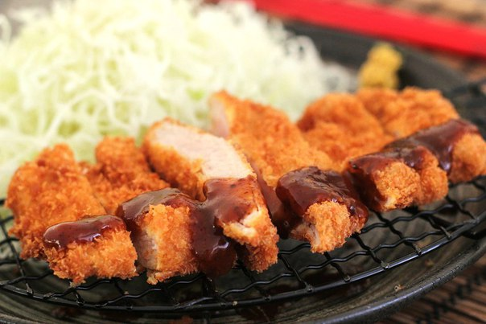

Chicken Katsu Recipe

Description
Chicken katsu (also Japanese chicken cutlet) is a Japanese dish that consists of a breaded,
deep-fried chicken cutlet. It involves coating slices of chicken with panko (bread crumbs),
and then frying them in oil. The two main types are fillet and loin.
Chicken katsu is generally served with tonkatsu sauce (とんかつソース),
a thick Japanese vegetarian pureed fruit-based brown sauce, or a well-seasoned ketchup,
as a Hawaiian mixed plate lunch meal. It is generally served with shredded cabbage,
rice or miso soup as part of a two or three item combo, or as a dinner with rice and vegetables.
Ingredients
For the Batter
- Water 150ml
- Egg 60g (1-2each)
- All purpose flour 90g
For Chicken
- Chicken thigh 600g
- Kombu salt 1tsp (6g)
- Sugar 1/2tsp (2.5g)
For Kombu
Others
- Black pepper
- Panko
- Cabbage
Steps
- Trim and butterfly chicken if necessary. Blitz salt and kombu to make kombu salt. Mix it with sugar, and sprinkle to the chicken.
- Mix all the stuff for the Batter. Crumb chicken with flour, batter, panko. Leave at room temp for at least 30 mins.
- Shred cabbage.
- Heat oil to 185-190℃ (365-374F).
- Cook chicken 2.5 mins.
- Flip, cook 2 mins on the other side.
- Let it rest for 3 mins, then slice.